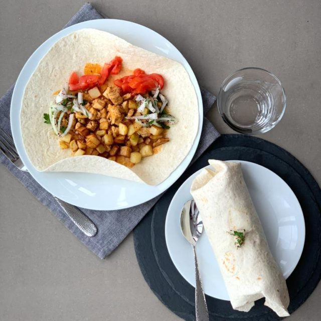

Chicken Tantuni

Description
Tantuni is a type of kebab. It consists of cooking small pieces of meat, either beef or chicken. Generally prepared with chopped tomatoes, and an onion mix and spices. Served in thin wraps and lavash. Tantuni originated from the Turkish city of Mersin, then spread all around. Now it is famous all around Turkey and most of Europe.
Starting from the end of the XVth century, a Mongolian community lived around Mersin. Even today, there is a neighborhood named after them. The word Tantuni might have been derived from the Mongolian word tamturi, which meant to have a snack, to eat in small bites.
Ingredients
- 2 whole chicken breasts
- 3 green peppers
- 3 tomatoes
- 1 onion
- 1/4 cup of olive oil
- 1 tablespoon of sweet paprika
- 1 teaspoon of cumin
- 1 teaspoon pepper flakes
- Salt
- Chopped parsley
- 6 lavash breads
Steps
- Chop the chickens into small pieces.
- Heat the olive oil in a pan and take into the chopped chicken.
- Stir fry until the the release their juice and then the juice is evaporated.
- Stack the chickens on one side of the pan and fry the finely chopped onion in the space you opened.
- Mix the roasted onions with the chickens.
- Stack the chickens on one side of the pan, add the finely chopped peppers to the middle and fry them.
- When the peppers start to cook, mix them with the chickens.
- Add paprika and mix.
- Add the chopped tomatoes and cook until the their juice is evaporated.
- Add salt, pepper flakes and cumin, mix and remove from heat.
- Divide the chicken over lavash breads, sprinkle plenty of chopped parsley on and wrap them.